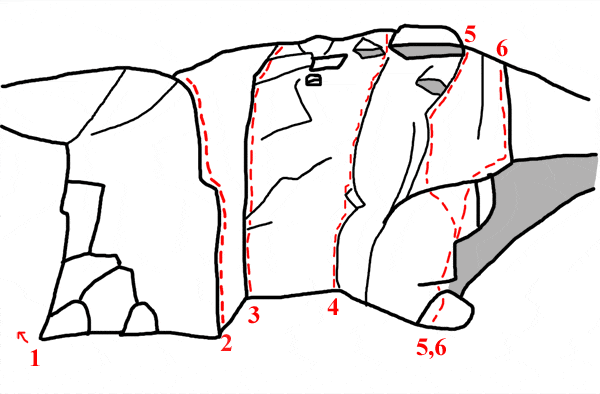

Valberget
<div style="float: right; margin-left: 10px; padding: 3px; border: solid 1px #cccccc;">
<googlemap width=400 height=350 lat="56.21429371296636" lon="14.89771842956543" zoom="11" type="map">
56.21429371296636,14.89771842956543,Valberget
</googlemap>
</div>
[[Bild:Rampfeber.jpg|400 px|thumb|
Petter Åsander
gör första fribestigningen av
Foto: Fredrik Rapp]]
Lat: 56.21429371296636
Long: 14.89771842956543
Allmänt
Valberget är Blekinges största berg, med fin kristallrik granit som kan slita endel på fingertopparna.
Berget är som högst ca 30 meter och har både svaiga, vertikala och rejält överhängande delar riktade åt alla väderstreck.
På berget finns i nuläget ett 60-tal leder, allt från 4- till 8- men fokus ligger kring 6 - 7. Det finns potential för fler leder, och även ett antal boulderproblem (se
Valberget-Boulder
).
Klippan har ganska kort säsong några månader på våren, från att vintern tappar sitt tag om berget fram till att knotten och myggen vaknar till liv. På hösten är det ofta väldigt blött på många ställen.
Den korta säsongen gör att det inte klättras regelbundet här, vilket leder till att många leder mossar igen, ta med borstar!
Access
Markägaren är positivt inställd till klättring, men vill inte se några fler bultar på berget.
Det har dessutom varit problem med bilar på vändplatsen närmast berget, och det är mycket viktigt att parkera bilen i vägskälet innan vändplatsen, som bara ger ca 300 meter längre anmarsch.
Övernattning
Eldstäder finns på tre ställen, under det stora taket, under "Skånsk dynamit" samt på toppen av klippan, vid utsteget av "Fem myror...".
Dessa tre platser är bra för övernattning. Inget dricksvatten finns vid berget.
Hitta hit
Från E22
tag av vid avfarten där det är skyltat mot karlshamn sjukhus, kör norrut mot Asarum. Kör rakt fram genom två små rondeller och sväng höger i tredje rondellen mot Asarums centrum. I "stora korsningen" vid ica och coop i Asarum viker man av höger och fortsätter mot utkanten av samhället. Ta höger mot Granefors och efter ca 100 meter vänster mot Tararp. Strax efter en liten bro ta höger (återigen mot Granefors) och följ vägen genom S-kurvan. Direkt efter kurvan dyker det upp två småvägar till vänster. Ta den högra av dessa, skyltat mot valberget och följ denna ca 1 kilometer till ett tydligt vägskäl. Här är det skyltat vänster till valberget, parkera bilen här, och se till att det finns plats för markägaren att ta sig förbi med skogsmaskiner. Om man är lite planerande kan man nog trycka in 4 bilar här. Fortsätt till fots på vägen fram till den stora vändplats där man brukade parkera. Fortsätt på stigen som är förlängningen av vägen och ta första förgreningen till vänster. Följ sedan stigen av snett åt vänster när du har ett gammalt (numera uppväxt) hygge på vänster sida. Vik undan för undan mer åt höger, bort från "hygget". Strax efteråt syns berget tvärs över en blöt sänka. Om ni fortsätter följa stigen så hittar ni spänger över sänkan.
Sektor 1
Detta är den första delen av klippan man kan ana bakom skogen över sänkan vid anmarschen.
Det mesta här är väldigt mossigt, förutom dom nya turerna. Vissa partier kan uppfattas som lite smuliga.
- 1
- Dysmorfofobi
- 7-/7
- En av de första lederna på berget. Det markerade utsteget gjordes senare. Mossig våren 2009
-
- Klaustrofobi
- 6
- Kompromisslös hand och fistjamspricka. Följer den tydliga sprickan rakt upp mellan led 1 och 2. Rensad april 2011
- 2
- Skitrännan
- 6
- Insteg bakom ett träd. Mossig våren 2009
- 3
- Söndagspromenaden
- 4+
- Följer ett dieder upp till en stor hylla och sen vidare. Mossig våren 2009
- 4
- kirkuk
- A2
- Samma insteg som bagdad men fortsätter rakt upp i Z-sprickan och gör en lång sträckning för att nå bagdads övre parallell-spricka.
- 5
- Bagdad
- 6+
- Underhållande hangelspricka som startar någon meter till höger om Söndagspromenaden. Välsäkrad klättring med intressanta moves. Rensad hösten 2008
- 6
- Libanesens kamin
- 6-
- En härligt bökig offwidth som blir bredare och bredare ända till en ganska tight kamin. Kräver en stor kam i början sedan välsäkrad med små kammar. Ett måste för dig med sjuka böjelser! Ett variantutsteg är att gå över i bagdads laybackspricka halvvägs. rensad hösten 2008
Sektor 2
Den här sektorn ligger precis till vänster om det stora taket. Mellan led 3 & 4 går ett bultat övergivet projekt.

- 1
- Cigg & Jäger
- 6-
- Ett något överhängande hörn med spricka.
-
- Streckolin
- 6
- Fin svaled till vänster om led 2 med början bakom stenblocket. Välsäkrad för den uppfinningsrike. Rensad april 2011. (tack för borstningen)
- 2
- Lil' sis
- 5
- Kort men fin led, varierande klättring i den välsäkrade sprickan några meter till vänster om "Bad to the bone".
- 3
- Bad to the bone
- 5+
- Ihållande rakt dieder. femmaklättring för sexaklättrare. Den här leden är tyvärr ofta blöt, skulle må bra av en rensning.
- 4
- Palmyra
- A2+
- Följer det lilla diedret två meter höger om led 3. Ganska kluriga placeringar och ett träd lite för nära ryggen ger ett + till graden. Utsteg till höger om det hängande blocket i toppen.
- 5
- Käring på tvären
- 7-
- Samma insteg som Slaktarn, men viker av mot vänster efter tre bb. Mossig våren 2009.
- 6
- Slaktarn från Svängsta
- 7
- Följer bultlinjen åt höger precis på kanten till taket. Leden är tyvärr chippad av förstabestigaren men de chippade greppen påverkar inte svårigheten. Förstabestigarens val av lednamn har därmed fått en annan betydelse än vad han avsåg. Rensad september 2009.
Sektor 3
Denna sektor är det stora taket, som inte kan missas.
- 1
- Valarfhall
- A1+
- En riktigt häftig led genom det 6 meter långa taket! Lätt, med bra kilar, men fysiskt jobbig aidklättring.
- 2
- Crash test dummy
- A4
- Knallhård aidled som traverserar under det stora taket. Leden följer det "horisontella diedret" vars botten är helt sluten. Vid förstabestigningen användes specialtillverkade stora circleheads av bly som slogs fast mellan de båda väggarna. Helt sjuk linje med markfallspotential nästan hela vägen!
- 3
- Frige Guzman
- A2
- Rolig aid-klättring som ansluter till Gullefjun vid första kemankaret.
- 4
- Gullefjun
- 7/8-
- Insteget görs vid eldstaden, graderingen är avhängande om du använder stocken eller inte.
- 5
- Denguefeber
- A2
- Traverslinje från herman hednings insteg till gullefjun. Nervös start leder till en lugnare fortsättning. Fira av från någon av de sista bultarna på "Gullefjun". Pitonger & heads behövs.
- 6
- Vinglögg
- A2
- Överhängande dieder till vänster om Herman Hedning
- 7
- Herman Hedning
- 7
- Fint överhängande dieder med goda säkringar.
Sektor 4
Precis till höger om taket, med två karaktäristiska jamsprickor
- 1
- Fabrikören
- 7-
- Börjar i en spricka mellan Herman H och Klara skivan. Skulle behöva en omgång med stålborsten
- 2
- Klara skivan
- 6-
- Den vänstra jamsprickan. en lös skiva i toppen gör det lite läskigt att leda.
- 3
- Farbror smärtfri
- 6-/6
- Sagolik jamspricka med relativt gott om knoppar att stå på utanför sprickan. Vältejpade händer rekomenderas starkt. Behöver rensas, kräver riktigt lång tid att torka efter ett regn. Skriv in dig på toppen!
- 4
- Den lille förarglige
- 6+
- Hårt insteg rakt upp till bulten
- 5
- Disponenten
- 6
- Fingrig led, och rostig bult
Sektor 5
Första sektorn på bortre sidan av berget.
Gå stigen över en liten stenmur för att komma hit.
- 1
- Hippocampus
- 7
- Hårt krux och tunt utsteg, Mossig våren 2009
- 2
- Tänder på dig Sofia
- 5
- Väldigt kort led, eller relativt hög boulder, bestäm själv. Oavsett vilket så är det fin jamövning. Leden ligger en halvmeter till vänster om ett träd som givetvis inte får användas.
- 3
- Våga välja växel
- 7+
- Mossig våren 2009
- 4
- Thats what friends are for
- 6
- Fin pumpande spricka, som säkras med friends och kilar. Rensad våren 2009
Sektor 6
- 1
- Simplex
- 5+
- Stor lite grötig spicklinje med en stor utstickande sitthylla på mitten. Fin i toppen. Ta med stora friends.
- 2
- Käringdröm
- 4+
- Stort dieder med en hylla på mitten. Rensad våren 2007.
- 3
- Myggjagaren
- 6
- Brant svaklättring i början, som passeras med hjälp av areten. Sedan vidare upp i den fina sprickan på väggen.
- 4
- Gothskådaren
- 6c+
- Bultlinjen till höger om areten vid myggjagaren.
- 5
- Män är från mars, kvinnor är från venus
- A3
- Aidklättring uppför den släta skölden som klyvs av några tunna sömmar. Några rivets finns, vilka binder ihop den blankaste passagen. Gott om såväl tid som utrustning rekommenderas. Ankare finns på toppen.
- 6
- Bökhörnet
- 5
- Samma insteg som Skakis men fortsätt upp i hörnet med den stora sprickan (till vänster om orginallinjen).
- 7
- Skakis
- 5+
- Insteg över ett litet tak och sedan vidare i sprickan förbi ett träd. Rejält mossig våren 2009.
- 8
- Höjdartraversen
- 6+/7-
- En stor spricka som börjar på toppen av "Skånsk dynamit-blocket". Utsteget görs rakt upp via areten och är gemensam med "Liftarens guide till galaxen".
Sektor 7
- 1
- TNT
- A2+
- Fin artificiell klättring i den vänstra tunna sprickan brevid Skånsk dynamit. Gå antingen hela vägen till toppen eller traversera ut till ankaret på Skånsk dynamit.
- 2
- CP-mongoloid dumjävul
- A3
- Sveriges bästa lednamn? Den högra sömmen på dynamit-blocket. Går väldigt nära TNT, men bjuder ändå på väldigt fin aidklättring. Fira av från ankaret på Skånsk dynamit.
- 3
- Skånsk Dynamit
- 7a
- Fantastisk linje med omväxlande och pumpande klättring. Uppgraderad. Benchmark 7a! Fast ankare.
- 4
- Knallhatten
- 7+/8-
- Ett utsteg från Skånsk dynamit, bra säkringar. Förstabestigningen gjordes med förplacerade säkringar.
- 5
- Primitiv
- 6
- Breda sprickan i hörnet till höger om Skånsk dynamit.
- 6
- Köttflöjten
- 7+
- Areten till höger om skånsk dynamit, teknisk.
- 7
- För jävla bra
- A2
- Lång artificiell linje som går i en båge och sammansluter med led 13.
- 8
- Rampfeber
- 7
- Lång fin och varierande friklättring med bra säkringar. Startar med en underclingsekvens åt höger längs med flaket för att ta sig upp på hyllan, sen följer man sprickan som sveper åt höger ända till toppen. Bulten som helt omotiverat sitter en decimeter från sprickan halvvägs upp användes inte vid förstabestigningen. Den ursprungliga Aid-leden "ERU" går rakt upp över flaket via en bult i starten.
- 9
- Enhörningen
- 6
- Fin varierad klättring, först över ett sva, sen upp i en naturligt säkrad laybackspricka. Skulle må bra av en rensning. Leden har ett fast ankare upp på svaet ovanför. Halvvägs upp på leden viker en bultlinje av åt vänster. Den har inte klättrats.
- 10
- Longing for the sun
- A2+
- Starta på Enhörningen och fortsätt i tunn spricka till vänster om Boffer tills sprickan tar slut. Avsluta på Boffer.
- 11
- Boffer
- A2
- Aid-led från insteget på Enhörningen till utsteget på Polski lover
- 12
- Liftarens guide till galaxen
- 7-
- Mycket exponerad traversspricka åt vänster vid Enhörningens utsteg. Ansluter till Höjdartraversens utsteg. Mark Jansson förberedde leden för en förstabestigning med bultar (trots den fina sprickan), ovetande om att Patrik Lind samtidigt passade på att göra en d:o med kilar och friends. Hård för graden.
- 13
- -
- ca 6-
- Spricklinje till toppen från Enhörningens stand. orensad våren 2009
- 14
- Rackham röde
- 6+
- Utstegsvariant till Enhörningen. orensad våren 2009
- 15
- Yeti
- 4-
- Lättaste utsteget från enhörningen. Bör rensas.
- 16
- Polski lover
- 7+
- En krävande bultlinje några meter till höger om Enhörningen.
- 17
- Ground up
- 6
- Klockren jamspricka strax till höger om polski lover. Borstades upp redan 2007 av John Nordfjäll i tron att det var "rebell" han borstade. fira av från en liten tall två hyllor ovanför där sprickan slutar, eller mossorientera dig ända till toppen?
Sektor 8
Sista biten av berget på baksidan.
Firningsankaret ovanför Hamstertampongen ser ut att behöva bytas ut, men kan kompletteras med en gul camalot.
- 1
- Rebell
- 5+
- Spricka och dieder leder till stand i en stubbe. Andra repan görs i ett stort dieder åt vänster. Mer mossa än klippa...
- 2
- Fem myror är fler än fyra elefanter
- 6-
- Mycket fin klassiker. Startar med en lite avig decimeterbred spricka åt vänster, viker sedan av åt höger upp till ett rutnätssystem av sprickor, sedan över ett tak till en liten hylla och sen vidare till toppen som har fast ankare. Se upp för repdrag. Skulle behöva rensas i starten.
- 3
- Förspelet
- 5+
- En bultlinje från Fem myrors insteg till insteget på Hamstertampongen. Fin uppvärmning till Hamstertampongen eller Avbrutet samlag. Ganska bitig för graden. Rensad våren 2009.
- 4
- Hamstertampongen
- 6+
- Tydlig spricklinje till höger om fem myror. Börjar i en stand på en hylla. Har fast ankare vid insteget och ca 2 meter från toppen.
- 5
- Avbrutet samlag
- 6+
- Tätbultad och intensiv väggled till höger om Hamstertampongen.
- 6
- Svaplattan
- 6+
- Balansig svaklättring av ypperlig kvalitet, här visas det väldigt fort om du inte kan ditt smearande. Småfriends i toppen. Mossar tyvärr igen ganska fort, gör en insats för klättringen och borsta upp den om det behövs. Rensad våren 2009.
- 7
- Old mans arete
- 6-
- Välsäkrad klättring i sprickan på areten till höger om svaplattan, halvvägs tar sprickan slut och man följer högra sidan av areten tillsammans med Old mans väggtur.
- 8
- Inget för Pelle
- 6+
- Grötigt insteg strax till höger om areten. Ansluter till Old mans väggtur/arete halvvägs.
- 9
- Old mans väggtur
- 6+
- Följer en bultlinje rakt upp i gröten och viker sedan av ut mot areten. Grovrensad våren 2009 men skulle behöva rensas mer i starten.
- 10
- Old mans dieder
- 6+
- samma insteg som föregående, men viker av mot höger i det svaiga diedret som säkras med kilar och friends. Rensad våren 2009
- 11
- Mormor i hallonlandet
- 6-
- Sama insteg som Old mans vägg.. men viker av åt höger i en spricka bara efter någon meter. behöver rensas
- 12
- Thorin
- A1
- En lätt artificell led som gjordes solo vid förstabestigningen.
Kategori:Blekinge
Kategori:Överhäng
Kategori:Sva
Kategori:Vertikal
Copyright (C) Permission is granted to copy, distribute and/or modify this document under the terms of the GNU Free Documentation License, Version 1.3